By the time the hallmark motor symptoms of Parkinson's disease appear — tremors, rigidity, slowness — up to 50% of the dopaminergic neurons essential for movement have already been lost, making effective treatment far harder. Our lab works to change this by detecting the disease years earlier, during its prodromal phase.
We combine digital biomarkers from wearables, blood-based molecular signatures, electronic health records, and large-scale omics datasets with advanced machine learning — including large language models, transfer learning, and graph neural networks — to build a richer, earlier picture of Parkinson's risk and progression. Our long-term goal is to pave the way for neuroprotective treatments that intervene before irreversible neuronal damage occurs.
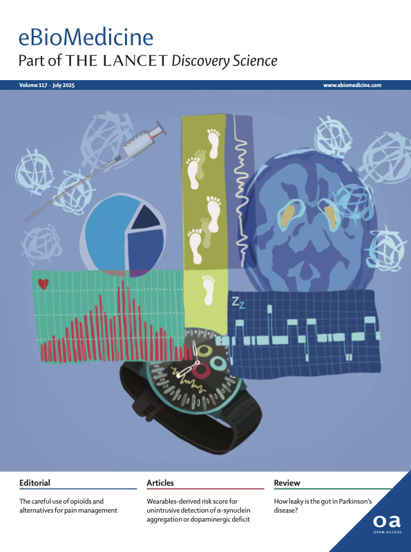
Featured on the July 2025 The Lancet EBioMedicine cover
This study was selected for the journal cover, highlighting our work on wearables-derived risk scores for early Parkinson's detection.
The group is also leading ReCoN as part of Module 3, Digital Health Data Science Foundation.
🧩 Tutorials Overview
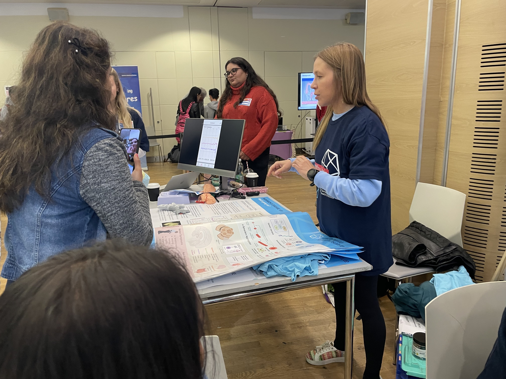
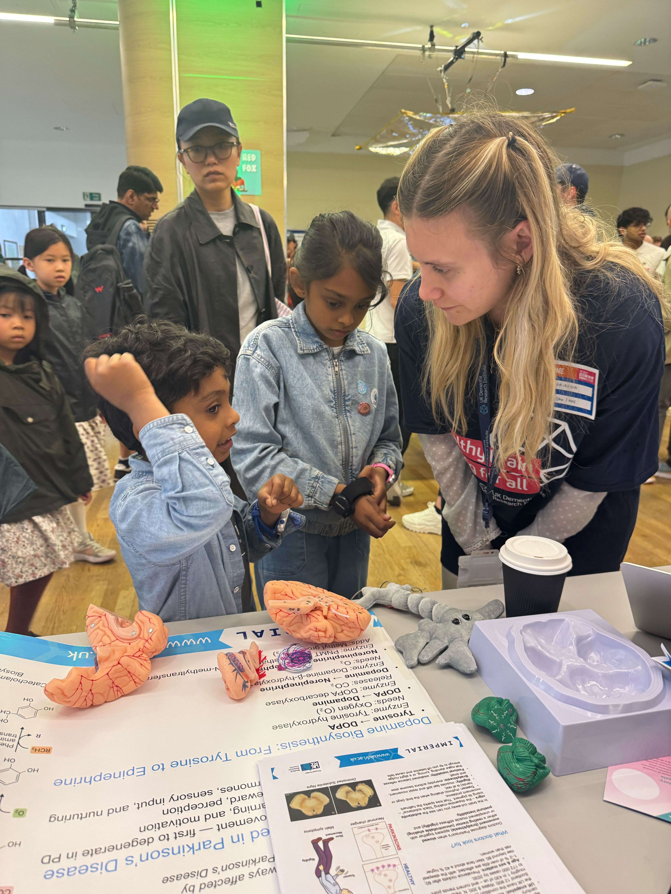
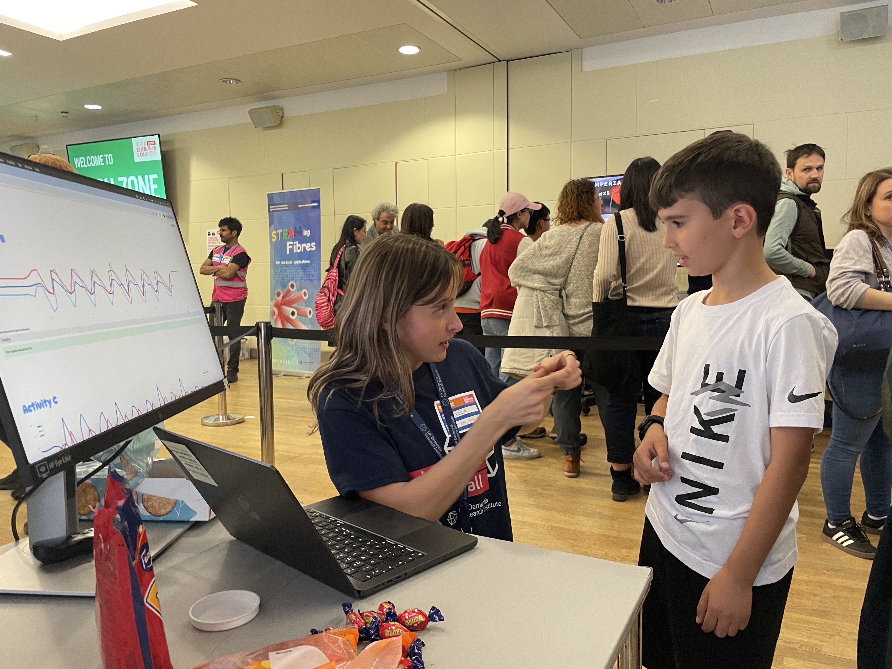
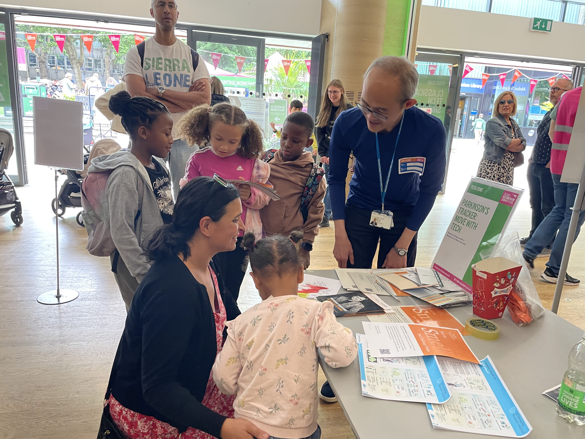
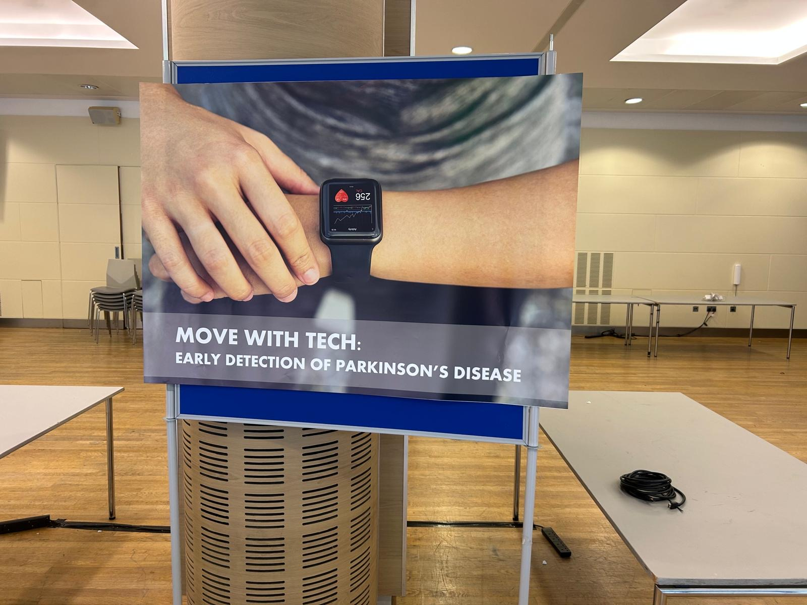
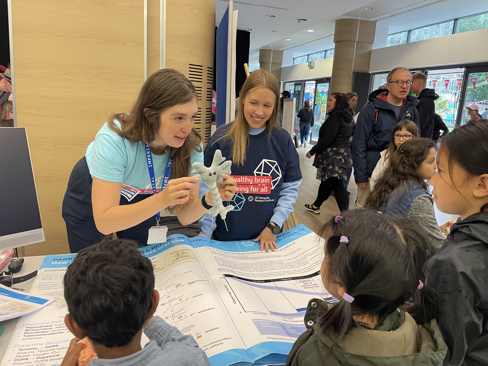
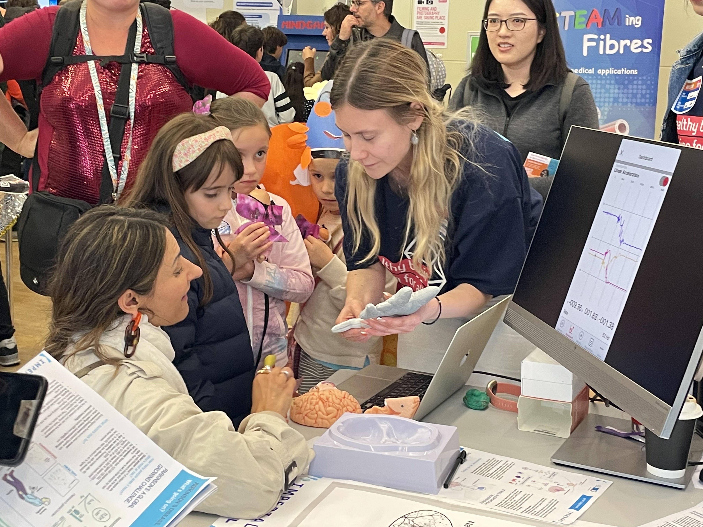
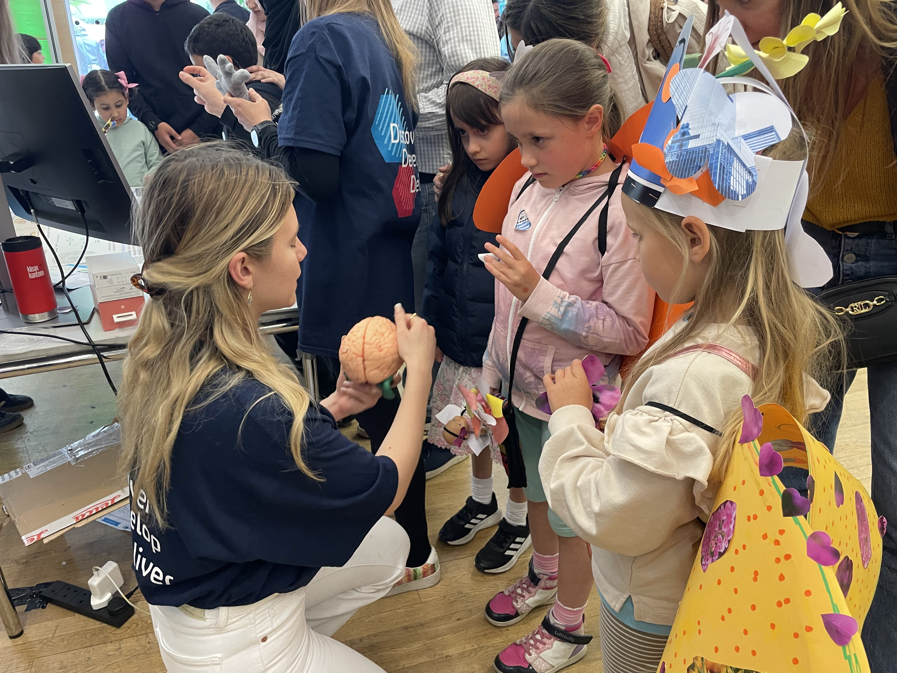
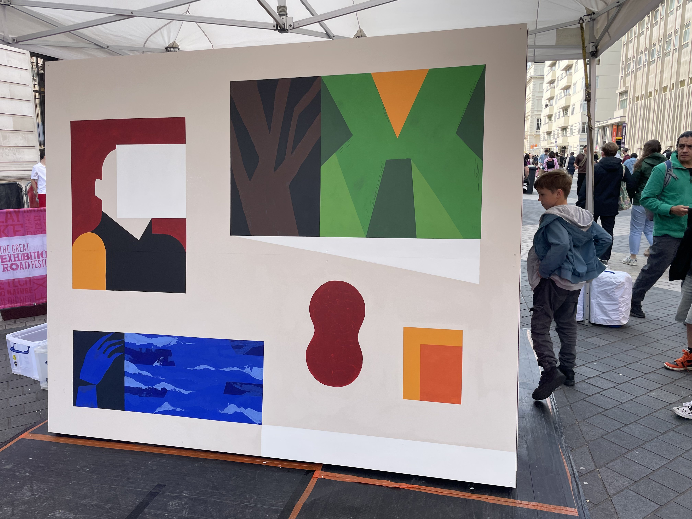
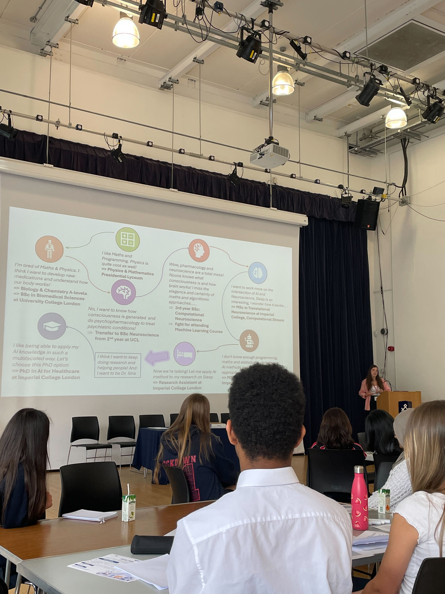
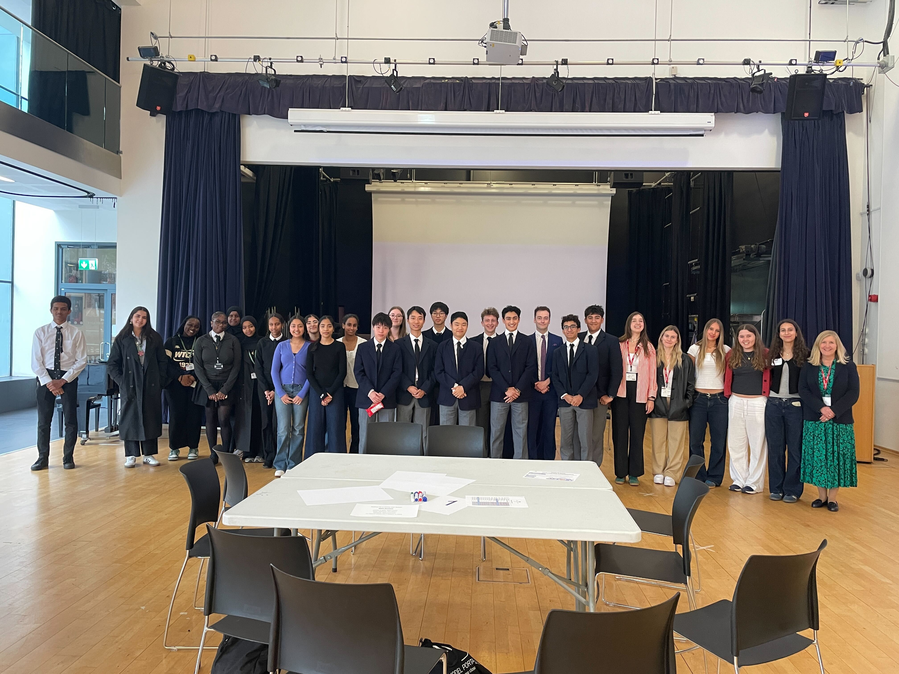